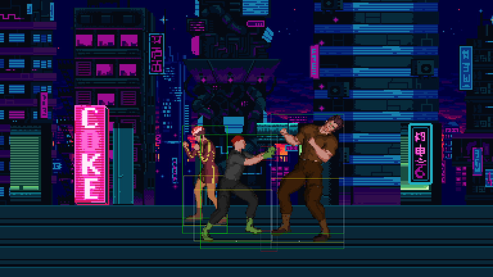
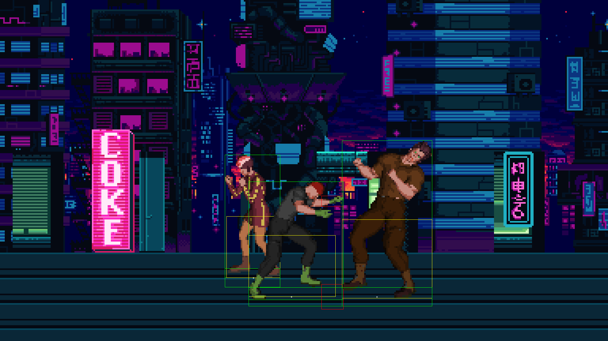
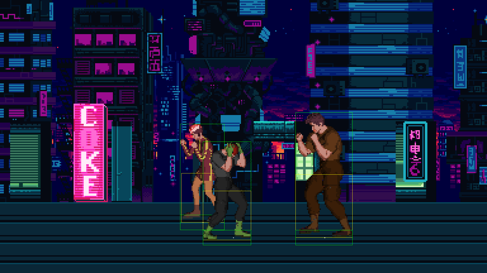
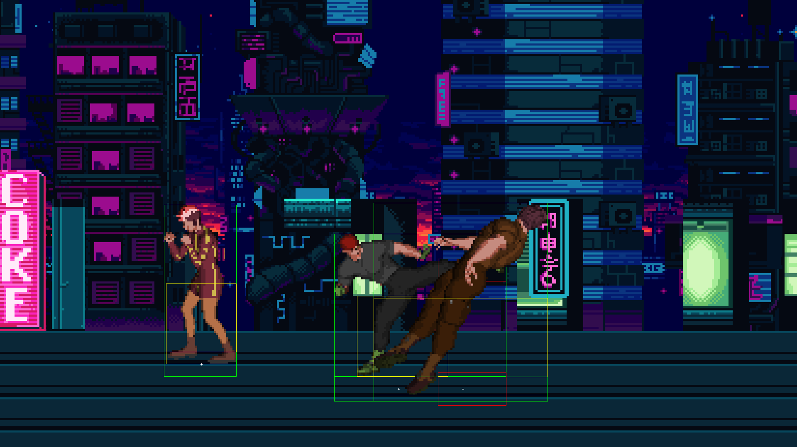
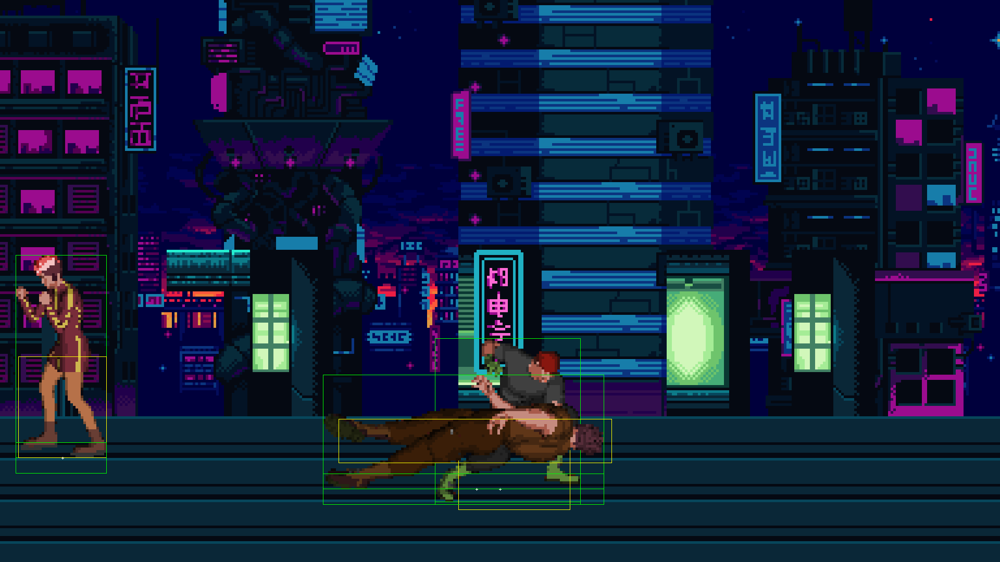
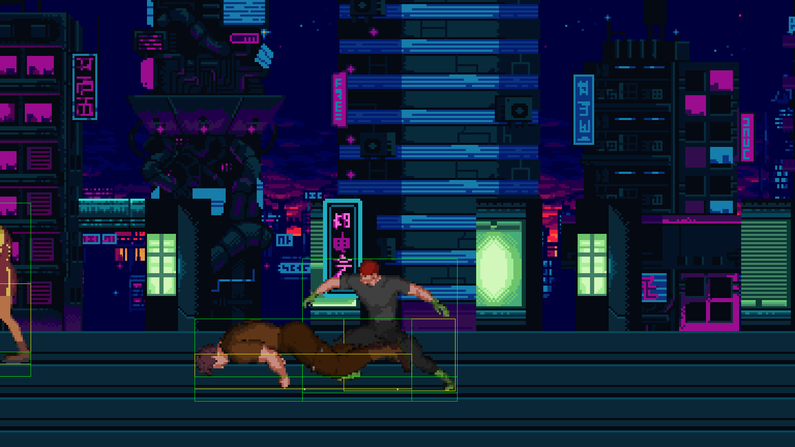

PASS b3-fight (gates 22 23 24 25 26 27 28)
ok frames: 14 ok same as headless: 29 line(s)










neon-rumble: seat tick 2: P2 joining neon-rumble: seat tick 3: P2 present neon-rumble: react tick 31: rainbird block neon-rumble: react tick 41: rainbird stand neon-rumble: hit tick 53: banderas/jab -> adler, damage 6, hp 94 neon-rumble: react tick 53: adler hurt neon-rumble: hit tick 66: banderas/jab -> adler, damage 6, hp 88 neon-rumble: hit tick 75: banderas/cross -> adler, damage 8, hp 80 neon-rumble: react tick 92: adler stand neon-rumble: react tick 101: banderas block neon-rumble: react tick 111: banderas stand neon-rumble: hit tick 154: banderas/jump_kick -> adler, damage 10, hp 70 neon-rumble: react tick 154: adler fall neon-rumble: react tick 174: adler down neon-rumble: hit tick 198: banderas/jump_kick -> adler, damage 10, hp 60 neon-rumble: react tick 209: adler getup neon-rumble: react tick 239: adler stand neon-rumble: hit tick 329: banderas/run_kick -> adler, damage 12, hp 48 neon-rumble: react tick 329: adler fall neon-rumble: react tick 346: adler down neon-rumble: react tick 353: banderas dodge neon-rumble: react tick 376: adler getup neon-rumble: react tick 377: banderas stand neon-rumble: react tick 406: adler stand neon-rumble: hit tick 417: banderas/grab -> adler, damage 6, hp 42 neon-rumble: react tick 417: adler thrown neon-rumble: react tick 436: adler down neon-rumble: react tick 466: adler getup neon-rumble: brawl tick 480: hash afa1b0c122f176a0, banderas 458,252 y 0 hp 100, rainbird 264,240 y 0 hp 100, adler 413,252 y 0 hp 42, draw rainbird banderas adler